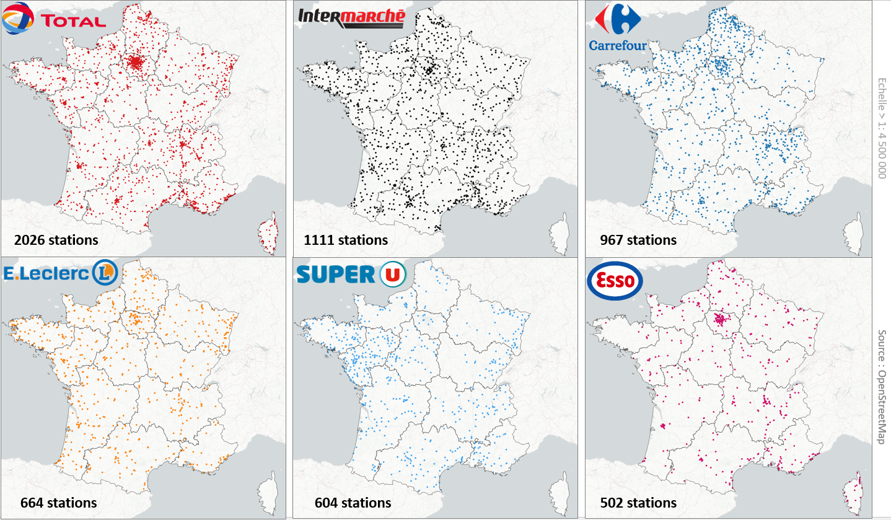

Disgressions cartographiques
Cette section centralise des explorations et des expérimentations cartographiques réalisées au fil du temps
Cartographie de la population (carroyage de l'INSEE à 1km) en mode LEGO
Cartographie des paiements en sans contact des touristes
Tracès des 6 réseaux de métros français
Tracès des 28 réseaux de tramways des métropôles françaises
Emprises spatiales des 12 plus grands aéroports mondiaux
La France des prix du gazole
La France des stations essences

La Frances des discounts
Cartographie des Airbnb à Paris (2019)
Cartographie des lieux de covoiturage à Nantes
Représentation en 3D d'un MNT drapé dans QGIS
La France des crêperies
Découpage régional basé sur la distance la plus proche aux capitales régionales (polygones de Voronoï)
Carte des gares de voyageurs en "toiles d'araignées" (polygones de voronoï)
Grands bassins versants hydrographique
Sections gratuites/payantes des autoroutes
Promotion Routes500
Promotion Routes500 V2

Cartographier les inégalités socio-spatiales en Île de France - Niveau de vie
Cartographier les inégalités socio-spatiales en Île de France - Chômage
Le millefeuille administratif français en GIF